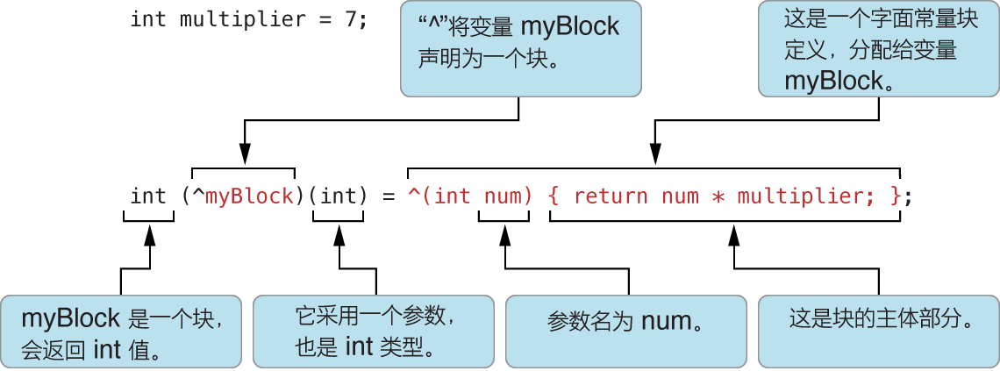

类
myRectangle = [[Rectangle alloc] init]; //alloc , init 都是NSObject的实例方法.alloc 开辟内存空间 init 初始化对象
TODO
声明
分为 接口声明 .h
@interface ClassName : ItsSuperclass
// Method and property declarations.
@end
和实现 .m
@implementation ClassName
{
// Instance variable declarations.
}
// Method definitions.
@end
在类内部使用self来表示当前实例。
属性（property）声明
@property (attributes) Type propertyName;
TODO
静态成员
实例成员
實例化
數組中的元素都是strong
所有類必須爲子類提供一個初始化方法
init 方法應當返回 id
一個初始化的例句
@implementation MyObject
- (id) init{
self = [super init]; // self 只是一個本地指針
if(self){
// initialize our subclass here
}
return self;
}
@end
方法
objc 用:来传递参数，参数可以出现在方法体的任意位置。让代码看起来更像是英语，如：
- (void) setColorToRed: (float)red Green: (float)green Blue:(float)blue; /* 宣告方法 */
[myColor setColorToRed: 1.0 Green: 0.8 Blue: 0.2]; /* 呼叫方法 */
括号内声明 (类型) . 感觉好读,但是又好罗嗦.
[receiver message]
[nil message] 向nil发送消息将返回nil。
類方法 vs 實例方法
Struct 和 Object 的區別
聲明
- (BOOL) isRignt; // 實例方法，以 *-* 開始
+ (id)alloc; //類方法，以*+* 開始
作用
類方法主要就是爲創建對象和工具方法使用
調用
[<pointer to instance> method]; //實例方法
[Class method]; //類方法
[[instance class] method] //調用instance 的類方法
self/super 同 java 的 this/super
nil
nill = 0
所有synthesize 的實體變量都是nil
if(obj) 可以判斷是否爲nil
向nil發送消息，不會導致異常，實際上沒有任何代碼被執行。 如果方法有返回值，那他將返回 0
int i = [obj methodWhichReturnsAnInt] // 如果 obj爲nil，那麼i將等於0
TODO
作用域
与java相同的实例变量作用域
@private
@protected
@public
@package
Dot Syntax
. 操作符可以用来访问对象的accessor methods ，即java 中实例变量的get
方法。
self.age = 10;
等于
[self setAge:10];
如果没有用 self., 将自己访问实例变量本身。下面例子中, age 的 set 并
没有被调用
age = 10;
@ 符号
很多Objective-C 关键字都有个@作为前缀,目的是为了避免和C/C++的关键字冲突，让其面向对象的语法可以和C/C++共存。
下面是部分关键字的列表
- @implementation
- @interface
- @end
- @synthesize
- @dynamic
- @public
- @private
- @property
还可以作为值对象的速记语法
@"" // 是 NSString 的语法.
NSNumber *myIntValue = @32;
NSNumber *myDoubleValue = @3.22346432;
NSNumber *myBoolValue = @YES;
NSNumber *myCharValue = @'V';
NSNumber *myFloatValue = @3.2F
// 「U」、「L」、「LL」
// @[ ...] 创建数组
NSArray *myArray = @[ @"Hello World", @67, [NSDate date] ];
// 以下代码创建含三个键－值对的不可变字典对象
NSDictionary *myDictionary = @{
@"name" :NSUserName(),
@"date" :[NSDate date],
@"processInfo" :[NSProcessInfo processInfo]
};
// 还可以使用下标访问字典中的对象
NSString *theName = myDictionary[@"name"];
//可以使用下标，将键－值对添加到可变字典中
NSMutableDictionary *mutableDict = [[NSMutableDictionary alloc] init];
mutableDict[@"name"] = @"John Doe";
%@ 用于格式化语法，打印出 Obj-C 对象的字符串表示，descriptionWithLocale:。注意，这个不是Obj-C语法的一部分，而是框架级的。
详细见：http://stackoverflow.com/questions/25749/what-does-the-symbol-represent-in-objective-c
协议 代理 类别
协议:
@protocol Locking
- (void)lock;
- (void)unLock;
@end
/*类似 java中的接口
在类中这样声明表示,实现协议(接口)*/
@interface MyClass:SuperClass <Locking>
@end
常量
- 使用c的预处理#define来设置常量。
-
const关键字
常量也是大小写混排的驼峰命名规则，首字母小写，另外，第一个字母是k。
http://marshal.easymorse.com/archives/4149
程序入口
Objc 的入口还是main函数，这是iOS程序的入口
int main(int argc, char *argv[])
{
NSLog(@"%d,%s",argc,*argv);
@autoreleasepool {
return UIApplicationMain(argc, argv, nil, NSStringFromClass([DemoAppDelegate class]));
}
}
BOOL
objc 的布爾類型，實際是用了typedef NO 等於 0 ，YES 爲非零
动态编程
id
id 是对象的标识符，类似于 java 中的 Object
id 为一个 objc_object 的结构指针
typedef struct objc_object {
Class isa;
} *id;
所以每个对象都有一个 isa 变量
- setMyValue:(id) foo;
该声明表示「foo」可以是任何类的实例。
- setMyValue:(id <aProtocol>) foo;
该声明表示「foo」可以是任何类的实例，但它必须符合「aProtocol」协议。
- setMyValue:(NSNumber*) foo;
Dynamic Binding (動態綁定)
固定類型，只是方便debug，固定類型和id在運行時是沒有區別的。
Object Typing
跟java 有不少區別，找課件
isKindOfClass isMemberOfClass respondsToSelector
@selector() 將方法名轉換爲 selector
[obj respondsToSelector:@selector(method)];
selector 非常酷，更有面向函數語言的感覺了。
运行时系统
内存管理
您应该将弱引用用于以下种类的引用：
委托
@property(weak) id delegate;
您将在「设计模式」文章「采用设计模式使您的应用程序合理化」中了解有关委托和目标的信息。 未引用顶级对象的 Outlet
@property(weak) IBOutlet NSString *theName;
Outlet 是对象之间的连接（或引用），归档在串联图或 nib 文件中，且在应用程序载入该串联图或 nib 文件时得到恢复。串联图或 nib 文件中顶级对象（通常是窗口、视图、视图控制器或其他控制器）的 outlet 应该为 strong（默认值，因此无标记）。 目标
(void)setTarget:(id __weak)target
在块内对 self 的引用
__block typeof(self) tmpSelf = self;
[self methodThatTakesABlock:^ {
[tmpSelf doSomething];
}];
一个块对它所捕捉的变量构成强引用。如果在块内使用 self，该块对 self 构成强引用。因此，如果 self 也具有对该块的强引用（通常都有），将产生强引用循环。要避免循环，您需要在块外创建对 self 的 weak（或 __block）引用，如以上例子所示。
块

用typedef简化块的定义
typedef float (^MyBlockType)(float, float);
MyBlockType myFirstBlock = // ... ;
MyBlockType mySecondBlock = // ... ;